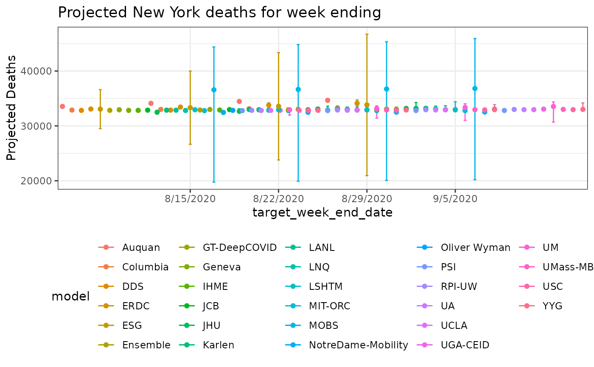

Projected deaths from COVID-19 models
Source:R/cdc_aggregated_projections.R
cdc_aggregated_projections.RdThe US CDC gathers projections from several groups around the world and aggregates them into a single data resource. See the reference below for details of the models.
cdc_aggregated_projections()
Details
These models are not updated daily but more like weekly. This function will attempt to grab the latest version.
References
See also
Other data-import:
apple_mobility_data(),
beoutbreakprepared_data(),
cdc_excess_deaths(),
coronanet_government_response_data(),
cov_glue_lineage_data(),
cov_glue_newick_data(),
cov_glue_snp_lineage(),
covidtracker_data(),
descartes_mobility_data(),
ecdc_data(),
economist_excess_deaths(),
eu_data_cache_data(),
google_mobility_data(),
government_policy_timeline(),
healthdata_mobility_data(),
healthdata_projections_data(),
healthdata_testing_data(),
jhu_data(),
jhu_us_data(),
kff_icu_beds(),
nytimes_county_data(),
owid_data(),
param_estimates_published(),
us_county_geo_details(),
us_county_health_rankings(),
us_healthcare_capacity(),
us_hospital_details(),
us_state_distancing_policy(),
usa_facts_data()
Other projections:
healthdata_projections_data()
Examples
#> # A tibble: 6 x 8 #> model forecast_date target target_week_end… location_name point quantile_0.025 #> <chr> <date> <chr> <date> <chr> <dbl> <dbl> #> 1 Auqu… 2020-05-25 1 wk … 2020-05-30 Alabama 803 488 #> 2 Auqu… 2020-05-25 1 wk … 2020-05-30 Alaska 15 10 #> 3 Auqu… 2020-05-25 1 wk … 2020-05-30 Arizona 1006 680 #> 4 Auqu… 2020-05-25 1 wk … 2020-05-30 Arkansas 170 98 #> 5 Auqu… 2020-05-25 1 wk … 2020-05-30 California 4752 3240 #> 6 Auqu… 2020-05-25 1 wk … 2020-05-30 Colorado 1673 1215 #> # … with 1 more variable: quantile_0.975 <dbl>#> Rows: 3,058 #> Columns: 8 #> $ model <chr> "Auquan", "Auquan", "Auquan", "Auquan", "Auquan"… #> $ forecast_date <date> 2020-05-25, 2020-05-25, 2020-05-25, 2020-05-25,… #> $ target <chr> "1 wk ahead cum death", "1 wk ahead cum death", … #> $ target_week_end_date <date> 2020-05-30, 2020-05-30, 2020-05-30, 2020-05-30,… #> $ location_name <chr> "Alabama", "Alaska", "Arizona", "Arkansas", "Cal… #> $ point <dbl> 803, 15, 1006, 170, 4752, 1673, 4066, 442, 540, … #> $ quantile_0.025 <dbl> 488, 10, 680, 98, 3240, 1215, 3408, 290, 383, 19… #> $ quantile_0.975 <dbl> 1408, 25, 1630, 286, 7661, 2426, 5159, 729, 824,…#> #> Auquan Columbia Ensemble ERDC GA_Tech Geneva Imperial ISU #> 204 204 224 208 124 1 1 200 #> JHU LANL MIT MOBS UA UCLA UMass-MB UT #> 208 216 208 204 208 208 208 208 #> YYG #> 224#> #> 1 wk ahead cum death 2 wk ahead cum death 3 wk ahead cum death #> 766 764 764 #> 4 wk ahead cum death #> 764#> [1] "2020-05-25"#> [1] "2020-06-20"library(dplyr) library(ggplot2) # FACET view res_ny = res %>% dplyr::filter(location_name=='New York' & grepl('cum death', target)) %>% dplyr::filter(model!='UMass-MechBayes') res_ny %>% dplyr::filter(location_name=='New York') %>% ggplot(aes(x=model, y=point, color=model)) + geom_errorbar(aes(ymin= quantile_0.025, ymax = quantile_0.975)) + facet_wrap(facets='target_week_end_date') + geom_point() + labs(y='Projected Deaths') + theme_bw() + theme(axis.text.x=element_blank()) + ggtitle('Projected New York deaths for week ending')#' # combined view pd <- position_dodge(width = 3) # use this to offset points and error bars res_ny %>% ggplot(aes(x=target_week_end_date, y=point, color=model)) + geom_errorbar(aes(ymin= quantile_0.025, ymax = quantile_0.975), position=pd) + geom_point(position=pd) + labs(y='Projected Deaths') + geom_line(position=pd) + theme_bw() + theme(legend.position='bottom') + ggtitle('Projected New York deaths for week ending')